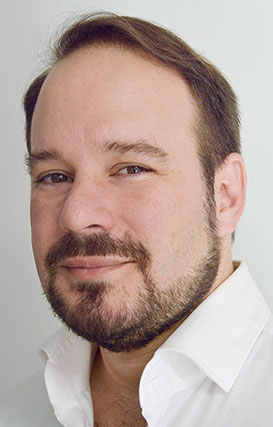
Diego Gutierrez Zaldivar CEO A pioneer of web development in Argentina and Latin America since 1995, Diego was also one of the first persons to foster and develop Bitcoin and blockchain technology in Latin America Read More +

Diego Gutierrez Zaldivar CEO A pioneer of web development in Argentina and Latin America since 1995, Diego was also one of the first persons to foster and develop Bitcoin and blockchain technology in Latin America Read More +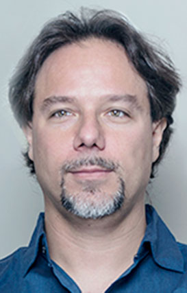
Sergio Demian Lerner Chief Scientist Widely recognized as a leading security and cryptocurrency researcher, and a serial entrepreneur, Sergio has co-founded 7 technology companies: RSK Labs, Coinspect, Coinfabrik, WayniLoans, ASICBoost, Identiva Security and Pentatek… Read More +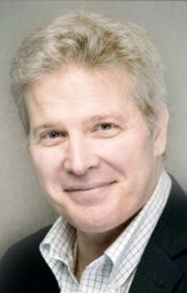
Alex Aberg Cobo Chief Legal Officer and Board Director Alex joined RIF Labs in March 2018. Prior to this, he managed Latin America at Minerva Project LLC since, starting June 2013. As such, he has spoken at multiple innovation and educational panels, including Talent Land Guadalajara 2018, Devising the XXI Century Education at PUC Paraná (Brazil), and the Tecnológico de Monterrey Conference on Innovation in Education. Read More +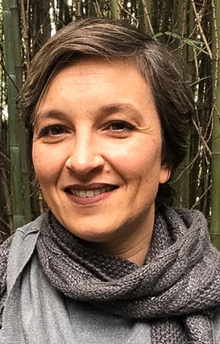
Stephanie Lelaurin Chief of staff Stephanie Lelaurin has devoted her career to facilitate and accelerate transformational changes for both individuals and organizations, to enable them to reach their highest levels of excellence and personal fulfillment. She has more than 20 years of experience working first with global companies such as Loréal, Louis Vuitton then as an entrepreneur on projects related to social impact, and since 2012 she has specialized in the area of transformational coaching assisting leaders, entrepreneurs, politicians looking for professional excellence in their areas of influence. Read More +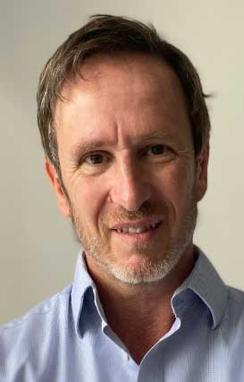
Marcelo Del Blanco Chief People Officer Marcelo has two decades of global experience leading International Human Capital teams in a variety of roles at startups and large companies, including Local, Regional and Global responsibilities in areas such as Talent Development, Compensation and Benefits and Software Labs general management. He was previously the Chief People Officer at Technisys, where he was responsible for the opening of Software Labs and People operations in different countries (including Canada, Brazil) during a period of 3x revenue per employee growth. Argentinian by birth, Marcelo’s education is in Adverising (Universidad de Belgrano) and in Human Resources (Universidad Argentina de la Empresa) Read More +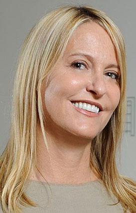
Gloria Vailati Chief Marketing Officer Gloria Vailati has more than 20 years of experience in the technology world through companies such as Compaq , HP and Apple and a strong trajectory in marketing and business management. She held positions such as Marketing Director, Internet Business Development Director for Compaq in Latin America, Director of PC´business for Hewlett Packard – a 1 billion business unit for the company- and at Apple she was General Manager for South America and the Caribbean. She also cofounded FWTV the first web TV platform in Latin America. Read More +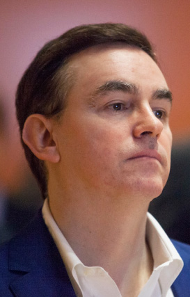
Eddy Travia Regional Director Asia Pacific Eddy has been a pioneer investor in blockchain technology companies since 2013 and the Regional Director Asia Pacific at IOV Labs since February 2020 via a Singapore-based joint venture between IOV Labs and Coinsilium Group. Read More +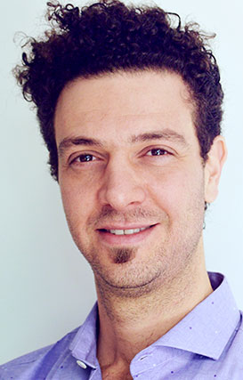
Gabriel Kurman Master Ambassador A regular speaker at international Blockchain conferences with more than 20 years of experience in corporate finance and private equity. He has been involved in the crypto space since 2013 when he co-founded multiple for-profit and non-for profit Blockchain projects. Read More +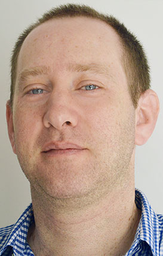
Adrian Eidelman RSK Strategist With over 20 years of programming experience, Adrian was a co-founder of Kinetica (together with Ruben Altman) and was involved in the Blockchain Nimblecoin development. He also worked as a programming consultant for various companies (Disco, Tenaris, Microsoft, etc.) and was Process Improvement Consultant for Baufest. Read More + Alejandro Narancio
RIF Strategist
Alejandro has over 15 years of experience in
the technology industry working as software Solution Architect focused in distributed systems and
innovative technologies. He has worked at top organizations in the in IT business such as
TataTechnologies Wiki You and Tivit. His areas of expertise include Web architecture and
development, system refactoring, cloud computing, client and project management.
Read More +
Alejandro Narancio
RIF Strategist
Alejandro has over 15 years of experience in
the technology industry working as software Solution Architect focused in distributed systems and
innovative technologies. He has worked at top organizations in the in IT business such as
TataTechnologies Wiki You and Tivit. His areas of expertise include Web architecture and
development, system refactoring, cloud computing, client and project management.
Read More +
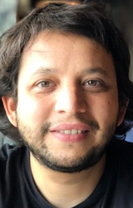
Matias Botbol Taringa Strategist Matías Botbol is an Argentine entrepreneur with more than 20 years of experience in the Internet industry. He has created and developed the largest Hispanic social platforms in the world. Read More +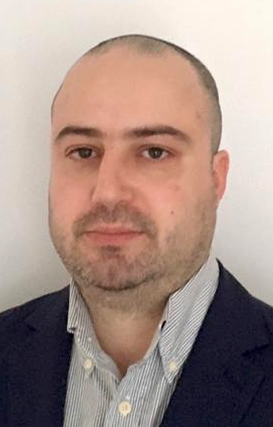
Filipe Moura Chief Technology Officer With experience for 20 years of technical, product management, and business development roles in several business industries and markets, Filipe has a full vision of market demands, with a data-driven approach to reshaping workflows and improving processes, including depth of understanding of business goals, empowering the business to scale. With 15+ years record executive leader in full lifecycle technical product delivery, Filipe builds top-performing teams, promoting business growth by revitalizing departments and programs by combining leading methodologies and industry best practice. Read More +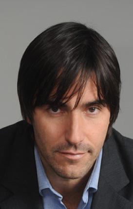
Miguel Santos Advisor Miguel is the founder and CEO of Technisys, a leading venture-backed digital banking company. The company has offices in US, Canada, Brazil, Mexico, Costa Rica, Colombia, Chile, Uruguay and Argentina and serves more than 50 banks and fintechs, reaching more than 60 million end users. Read More +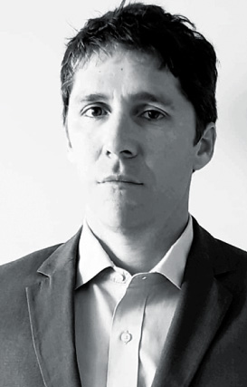
Cesar Levene Advisor Cesar Levene is managing partner of Estudio Levene, a legal & tax firm with offices in Argentina and Uruguay, advising Blockchain and cryptocurrency projects since 2014. Read More +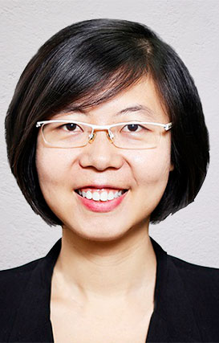
Yuan Zhang Advisor Yuan was Co-founder of DEx.top, CEO Assistant of Bitmain Technology. She holds a Double Masters majored in Finance in Hongkong University and Management in Beijing University. Read More +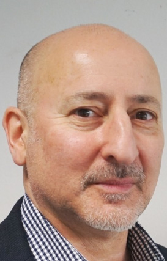
Malcolm Palle Advisor and Board Director Malcolm Palle is Chairman and co-founder of Coinsilium Group, the NEX Exchange listed blockchain venture builder. Read More +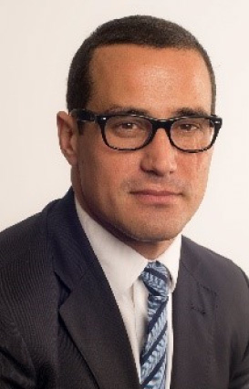
Joey Garcia Advisor and Board Director Joey Garcia is the financial services and fintech partner at ISOLAS LLP, Gibraltar’s longest established law firm (1892). He has co-chaired the Gibraltar Government working group on distributed ledger technology and Blockchain technology for a number of years and is ranked by Chamber and Partners as one of the top lawyers in the world in the Blockchain sphere. Read More +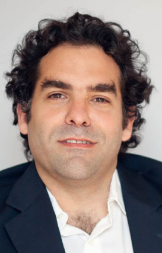
Ariel Muslera Advisor Ariel has 15 years of experience as a venture investor, advisor and entrepreneur in Argentina, Brazil and the US. In July 2017 Ariel joined the leadership team of RIF Labs as an advisor to help implement the vision of bringing Smart Contract functionality and scalability to the Bitcoin Blockchain and promote the use of distributed networks as a way to accelerate financial and social inclusion. Read More +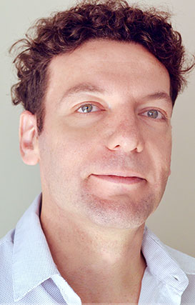
Ruben Altman Advisor With a long and prolific career as software developer and entrepreneur, Ruben previously co-founded software development company Kinetica. Read More +